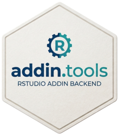

Package Architecture and Helper Families
Source:vignettes/helper-families.Rmd
helper-families.RmdOverview
addin.tools is a helper layer for RStudio addin
packages. It focuses on editor context, selection ranges, text
extraction, and text mutation helpers.
Helper families
- Context and state helpers:
rs_get_context(),is_visual_editor() - Selection helpers:
rs_get_selection_text(),rs_get_selection_range(),rs_get_n_selections() - Row and position helpers:
rs_get_row_range(),rs_get_index_*(),rs_get_position_*() - Text modification helpers:
rs_insert_text(),rs_replace_in_selection(),rs_select_rows() - Formatting helpers:
ensure_blank_line(),make_spaces(),repeat_symbol()
Common task patterns
Insert a wrapper around the current selection
context <- rs_get_context()
selected_text <- rs_get_selection_text(context = context)
rs_replace_in_selection(
replacement = paste0("<kbd>", selected_text, "</kbd>"),
keep_selected = TRUE,
selection = "first",
context = context
)Insert a small helper at the cursor
context <- rs_get_context()
rs_insert_text(
text = "message(\"Hello\")",
context = context,
spaces = FALSE
)Select a block of rows before formatting
context <- rs_get_context()
rs_select_rows(
first = 10,
last = 14,
context = context
)Migration notes
- Use
is_visual_editor()in new code. -
is_rmd_visual_mode()is retained as a deprecated wrapper for downstream compatibility. - When adding new helpers, prefer a small focused API and add regression tests around selection and mutation behavior.
Release notes for maintainers
- Use the release prep script under
data-raw/release-prep.Rfor the standard release sequence. - Run
data-raw/revdep-smoke-check.Rbefore tagging when downstream packages need a compatibility smoke test. - Use the CRAN checklist under
.github/cran-submission-checklist.mdbefore tagging a release.